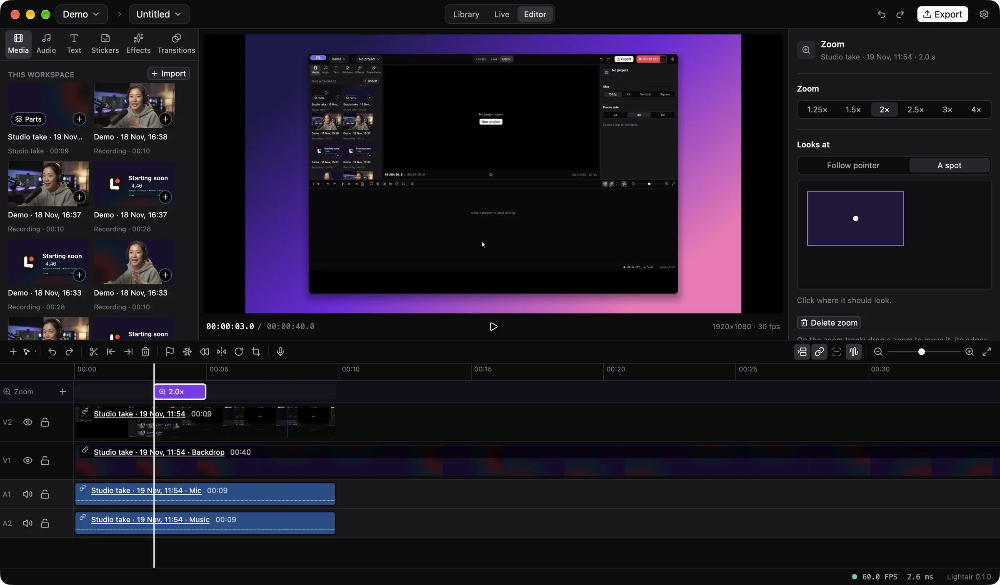
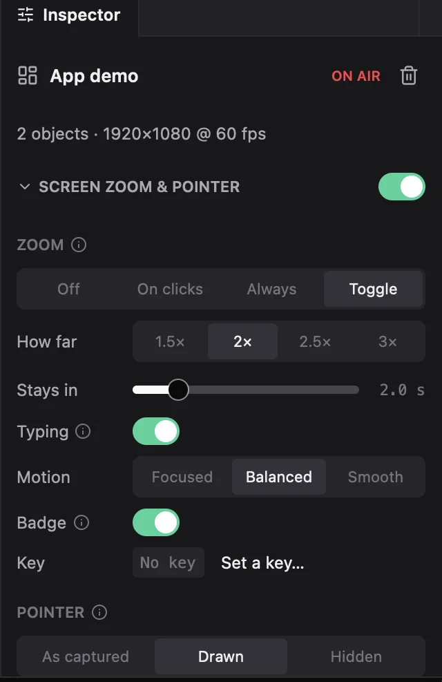
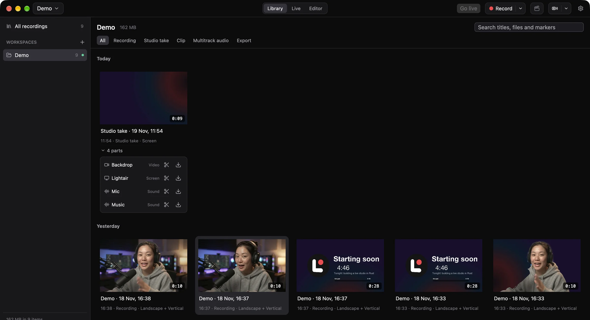
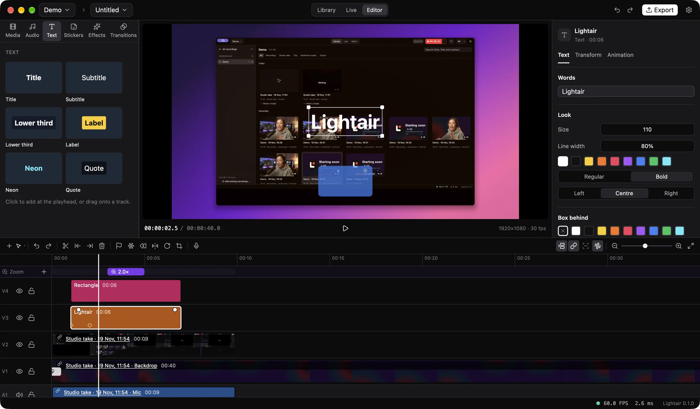
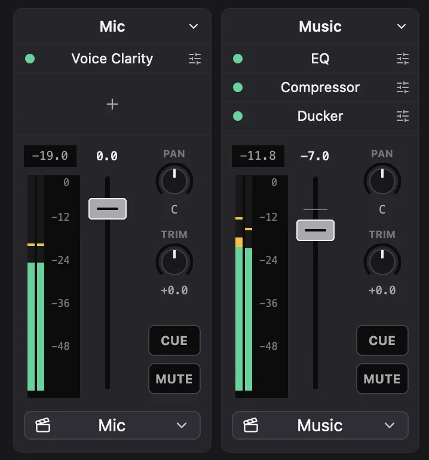

Record it, zoom it, edit it.
Lightair records app demos with zooms that follow your clicks, keeps every screen, camera and mic in a file of its own, and edits it all on a real timeline. When you're ready, it goes live too.

A Studio take in the Editor: the screen on its backdrop, a zoom on the zoom track, and the mic and music each on a track of their own.
Editor · Studio take · ZoomZooms that follow your clicks.
Record a Studio take of an app or a window and Lightair keeps the pointer, clicks and keys as data, not pixels. It zooms in where you click, follows you while you type, and redraws the pointer smooth. Live in the scene, or afterwards in the Editor.
- Zoom on clicks, always, or on a key; how far, how long, how smooth.
- Pointer as captured, redrawn bigger and smoother, or hidden.
- Each zoom is a block on the timeline: move it, stretch it, aim it at a spot.

Record once. Keep every part.
A take records each screen and camera at its own full size, and each mixer track as its own sound file, beside the finished picture. Open a take in the Library to see what's inside: trim or save any part, or take them all into the Editor and rearrange the shot.
- Screens and cameras at their own resolution, not squeezed into the layout.
- Every mic and music track as its own WAV.
- Both formats: landscape and vertical recorded at once.

A real timeline, in the same app.
Tracks for pictures and sound, titles that move, shapes, stickers, filters and transitions, captions from what's said, sound that ducks under voices. Everything you recorded is already in the media panel.

Titles and captions
Title, lower third, label and more, animated in and out; captions written from the sound.
Cut, trim, speed
Split, trim, link sound to picture, markers, speed and freeze frames, on as many tracks as you want.
Sound
Fades, volume keys, voice cleaning, music that ducks under speech, every track its own clip.
Sound like a studio, look like yourself.
Every mic is a channel strip with Voice Clarity in one switch, and every one is recorded to its own file for the edit. On camera, face-aware effects run in real time. Drag across to compare.

And when it's time, go live.
Scenes with layers in groups, landscape and vertical at once, a mixer, chat and alerts from every platform, on the engine inside OBS. Every panel docks, stacks or opens in its own window.
 1
2
3
4
5
6
1
2
3
4
5
6
- 1HierarchyLayers in groups, groups in groups.
- 2FormatsLandscape and vertical, side by side.
- 3CanvasMove, resize, rotate and crop on the picture.
- 4OutputsRecord both formats; stream to many places.
- 5MixerStrips with effects, meters and loudness.
- 6TransitionsCut, Fade, Move, Slide, Wipe, Dip, stinger.
One chat, every platform
Twitch, YouTube, Kick, TikTok and eight more, with moderation, alerts and 18 widgets served by Lightair.
Multistream
RTMP(S), SRT, RIST and WHIP to many places at once, sharing encoders.
Automations
Commands, timers and events that chat, switch scenes and set your lights. Streamer.bot imports.
Official sign-in
YouTube, Twitch, Kick and X: title and category from Lightair.
Bring your OBS setup
Scene collections import; OBS source, filter and output plugins load.
Drive it from anything
A remote API that also speaks obs-websocket, an MCP server for agents, and a Stream Deck plugin.
Free, and yours.
Open source under GPL-3.0. You don't need OBS installed. Lightair updates itself, never while you're live.
Windows
Windows 10 22H2 or 11, x64. Portable: unzip and run. Lightair-x.y.z-windows-x64.zip
Download for Windows